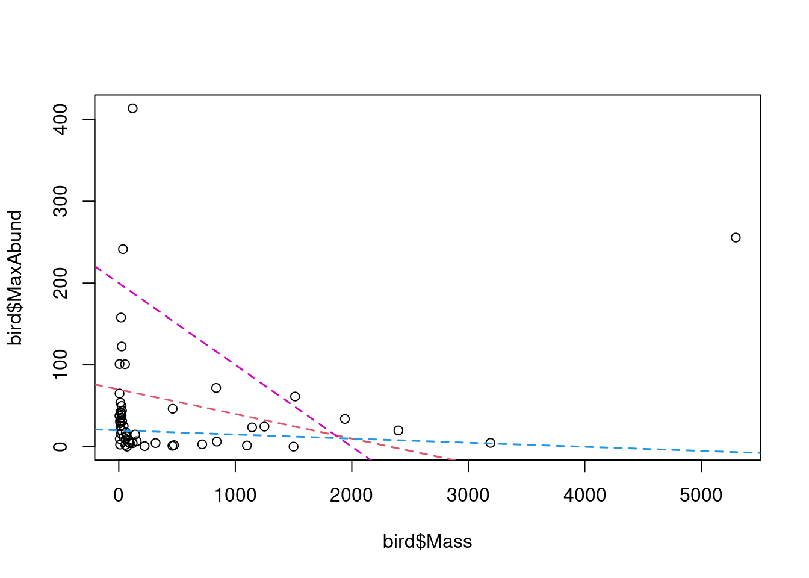

Chapter 3 The linear model
The previous workshops explored the use of R to manipulate and represent data. However, the focus in science is often on determining relationships between variables. This workshop builds on previous knowledge and focuses on linear regression as a first step into the world of statistical analysis.
Learning Objectives
- Learn the structure of a linear model and its different variants.
- Learn how to make a linear model in R with
lm()andanova(). - Learn how to identify a model whose conditions are not satisfied and how to solve the problem.
3.1 What is a linear model?
A linear model describes the relationship between a response variable and one or more predictor variables. It is used to analyze a well-formed hypothesis, often associated with a more general research question. Regression determines whether variables are correlated by inferring the direction and strength of a relationship, and our confidence in the effect size estimates.
Significant scientific work is required to formulate a linear model. Since the model is analyzing a hypothesis, it is recommended that expectations about the direction and strength of a relationship be clearly articulated as predictions before running a linear model.
3.1.1 Example: Abundance and mass of bird species
Hypothesis
For different bird species, the average mass of an individual affects the maximum abundance of the species, due to ecological constraints (food sources, habitat availability, etc.).
Prediction
Species characterized by larger individuals have lower maximum abundance.
We therefore hypothesize that birds characterized by greater mass require more food and space: the response variable is maximum abundance, and the predictor is the average weight of an individual.
Based on our prediction, we can expect the direction of the relationship between the response variable and the predictor to be inverse or ‘negative’, so that higher mass leads to lower abundance. However, we cannot formulate expectations about the strength of the relationship!
The data
The following example explores the “birdsdiet” dataset:
# Import the 'bidsdiet' dataset and save it in the 'bird'
# object
bird <- read.csv("data/birdsdiet.csv", stringsAsFactors = TRUE)The bird dataset contains seven variables:
# Explore the variables in the 'bird' dataset
str(bird)## 'data.frame': 54 obs. of 7 variables:
## $ Family : Factor w/ 53 levels "Anhingas","Auks& Puffins",..: 18 25 23 21 2 10 1 44 24 19 ...
## $ MaxAbund : num 2.99 37.8 241.4 4.4 4.53 ...
## $ AvgAbund : num 0.674 4.04 23.105 0.595 2.963 ...
## $ Mass : num 716 5.3 35.8 119.4 315.5 ...
## $ Diet : Factor w/ 5 levels "Insect","InsectVert",..: 5 1 4 5 2 4 5 1 1 5 ...
## $ Passerine: int 0 1 1 0 0 0 0 0 0 0 ...
## $ Aquatic : int 0 0 0 0 1 1 1 0 1 1 ...Note that Family, Diet, Passerine, and Aquatic are all categorical variables, despite the fact that they are encoded in different ways (string, categorical, binary).
The variables of interest to the hypothesis test are:
- “MaxAbund”: The greatest abundance observed at a site in North America (continuous / numeric)
- “Mass”: The average body size in grams (continuous / numeric)
**Basic Concepts
There are two key concepts for understanding linear models: localization and variation. Beware! These concepts are central to understanding the other concepts presented in the workshop.
The localization is a measure of central tendency of a population. It can be measured with the arithmetic mean \(\bar{x} = \frac{1}{n} \sum_{i=1}^{n} x_{i}\) :
# Average maximum observed abundance
mean(bird$MaxAbund)## [1] 44.90577or the median:
# Median of maximum observed abundance
median(bird$MaxAbund)## [1] 24.14682On the other hand, the mean cannot characterize an entire population. We can therefore also describe a population using measures of variation. Variation is the dispersion (or deviation) of observations around the mean. It is measured with the variance \(\sigma^2 = \frac{1}{n} \sum_{i=1}^{n} {(x_{i} - \bar{x})}^2\). The variance is the sum of the squared deviation between each value and the mean. Squaring the variance allows us to transform values into positive values without using absolute values.
# Variance of the maximum observed abundance
var(bird$MaxAbund)## [1] 5397.675On the other hand, squaring all values changes the units of our variables. In this example, the variance is given in abundance^2, a unit that is no longer relevant to our original question. To transform these values into the appropriate units, we can calculate the standard deviation \(\sigma\).
# Standard deviation of the maximum observed abundance
sd(bird$MaxAbund)## [1] 73.46887Visual exploration
The following figure shows the response variable against the predictor:
# plot the response in relation to the predictor
plot(bird$Mass, bird$MaxAbund)
This figure shows the variation of maximum abundance with bird mass. We are interested in quantifying this relationship. In other words, we are interested in quantifying the effect of bird species mass on their maximum abundance. However, how do we find the “best” estimate of the relationship?

The “best” estimate is the line that minimizes the sum of squares. This will become clearer in the next sections. Note that the “best” estimate can also be the absence of a relationship, similar to the blue line in the figure.
3.2 Formulation of a linear model
The linear model describes the “best” relationship between a response variable (“MaxAbund”) and one or more predictors (here “Mass”). The response variable is the variable we want to explain, or the dependent variable. There is only one response variable. The explanatory variables are variables that can (potentially) explain the response variable. One or more explanatory variables can be included.
In a linear model, we define an observation of the response variable \(y\), as \(y_i\). In our example, this represents an observation of maximum abundance for a species \(i\).
A corresponding observation of the predictor \(x\) is defined as \(x_i\) and represents, for example, the average weight of an individual of a species \(i\).
In linear models, the concepts of mean and variation are used to describe the relationship between two variables. We say “linear models”, because they describe the relationship between variables with a straight line. This line represents the assumed relationship:
\[ y_i = \beta_0 + \beta_1 \times x_i + \epsilon_i\]
- \(y_i\) is the response variable
- \(x_i\) is the predictor
- The parameter \(\beta_0\) is the intercept.
- The parameter \(\beta_1\) quantifies the effect** of \(x\) on \(y\)
- The residual \(\epsilon_i\) represents the unexplained variation
- The predicted value of \(y_i\) is defined as: \(hat{y}_i = \beta_0 + \beta_1 \times x_i\)
3.3 Evaluation of the linear model
The linear model evaluates whether there is a significant correlation between the response variable and the explanatory variable(s). This is done by assessing whether the mean value of the response variable differs significantly between different values of the explanatory variables, such as for variation in maximum bird abundance by mass.
For categorical explanatory variables, the linear model assesses whether the mean value of the response variable differs significantly between different levels (or groups) of explanatory variables. This will become clearer as we explore the types of linear models in the following sections.
In almost all cases, the explanatory variables do not explain all the variation in the response variable. The variation that remains unexplained is the residuals, or error.
3.4 Assumptions of the linear model
The linear model is defined according to the equation we explored earlier:
\[ y_i = \beta_0 + \beta_1 \times x_i + \epsilon_i\]
To be valid, all linear models rely on 4 basic assumptions. If the 4 assumptions are not met, the model results cannot be interpreted in a valid way.
- Linear relationship between the response and the predictor
- Residuals follow a normal distribution with a mean of $0
- Residuals are symmetrically distributed (homoscedasticity)
- Residuals are independent of each other
Note that these 4 conditions concern the residuals, not the response or explanatory variables. This does not mean that all observed \(y\) values must follow a normal distribution!
3.4.1 Normal distribution of the residuals
For the results of a linear model to be valid, the residuals must follow a normal distribution with a mean of \(0\) and a variance of \(\sigma^2\), so that the majority of the residuals have a value close to 0 (i.e. the error is very small) and their distribution is symmetrical (i.e. the response variable is underestimated as well as overestimated):
\[\epsilon_i \sim \mathcal{N}(0,\,\sigma^2)\]
This means: Each obsevation \(y_i\) follows a normal distribution, with mean \(\hat{y} = \beta_0 + \beta_1 \times x_i\) and variance \(\sigma^2\):
\[y_i \sim \mathcal{N}(\hat{y},\,\sigma^2)\]
3.5 Notation for linear models
This section aims to provide a basic understanding of the different types of linear model descriptions that can be encountered. The first is mathematical notation and the second is R notation.
3.5.1 Mathematical notation
Mathematical notation is the only form of notation appropriate for manuscript writing. We note individual observations using the equation of the line as seen in the previous sections and the equation for the distribution of residuals:
\[y_i = \beta_0 + \beta_1 \times x_i + \epsilon_i \quad \textrm{with} \quad \epsilon_i \sim \mathcal{N}(0,\,\sigma^2)\]
To write down the set of observations, we follow the matrix notation and include the intercept in$\(mathbf{X}\) and \(\boldsymbol{\beta}\)) :
\[\mathbf{y}= \mathbf{X}\boldsymbol{\beta} + \mathbf{\epsilon} \quad \textrm{with} \quad \epsilon_i \sim \mathcal{N}(0,\,I_n\sigma^2)\]
3.5.2 R notation
Note that the R notation is not adequate for preparing a publication.
In R, we write the model formula as :
y ~ 1 + xOr simply as:
y ~ xwhich also includes the constant.
The predicted variable is always placed to the left of the ~ tilde, while the predictor variables are placed to the right.
You should never mix the different types of notation!
3.6 Fitting a linear model
We have seen that it is possible to define a linear model with this equation :
\[ y_i = \beta_0 + \beta_1 \times x_i + \epsilon_i\]
3.6.1 Model estimation
To run a linear model is to find the “best” estimates of the parameters \(\beta_0,\, \beta_1\). This is what we call doing the estimation of the model.
The “best” parameters are those that minimize the variation in the response variable. The most common method of minimizing the variation in a model is to sum the residuals squared \(\sum{epsilon_i^2}\). This method is called the ordinary least squares (OLS) method.